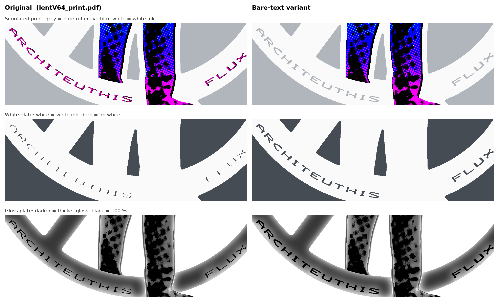
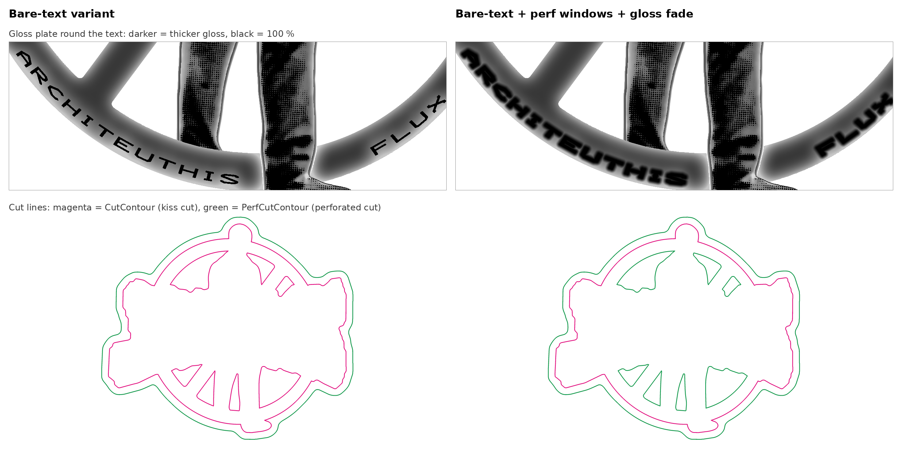
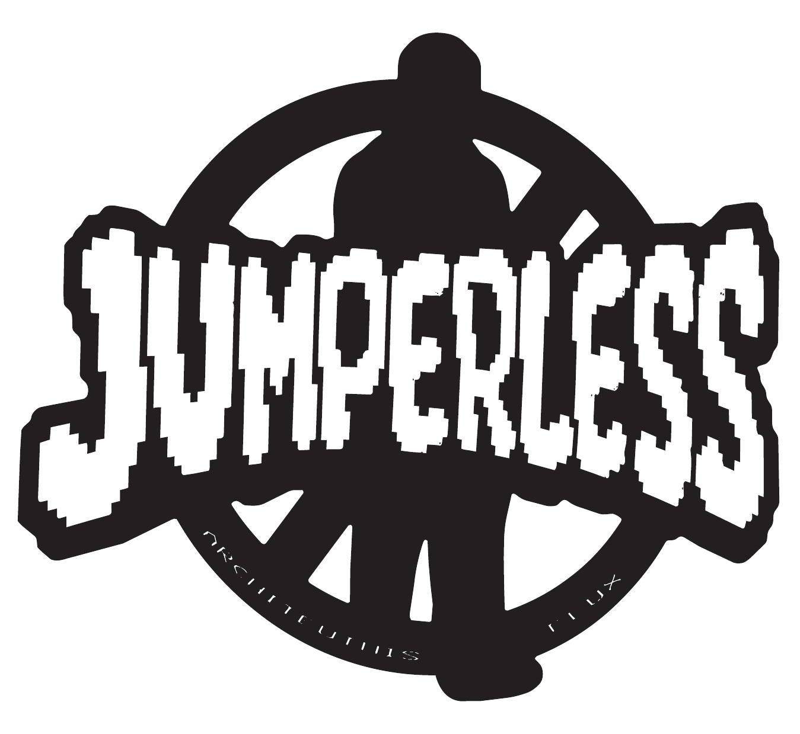

LG-540: white + colour + gloss sticker
How to set up and print the lentV64 sticker in VersaWorks 7 on the Roland LG-540: white ink under the colour, a thick glossy clear layer on top, then kiss cut and perf cut. Updated 23 November 2026.
The first print mostly worked, but the gloss barely showed: a few pinkish lines near the top that faded out, and the printer reporting the gloss ink as low. Three things are different now:
- Check the gloss on the printer first. Section 2 is new. Do it before any gloss job.
- The one-pass run is only an alignment check. Its gloss coat is thin and matte by design, so it will never look glossy.
- The real print uses two files. Run B now adds a gloss-only file on top and builds the gloss up in shiny coats.
What you need
lentV64_print.pdf(8.6 MB): everything. Colour, white, gloss and both cut lines.lentV64_gloss.pdf(4.9 MB): the gloss and the two cut lines only. Same page size, so it lands exactly on top of the first file. Used in Run B.- The LG-540 loaded with white and gloss ink as well as CMYK, with its firmware up to date. Version 3.60 (7 September 2026) was the newest listed when this was written.
- VersaWorks 7, up to date, with the printer already registered.
- The retroreflective film, loaded the way you load any print-and-cut roll.
Roland: LG series support page and user's manual · LG firmware history · VersaWorks 7 update notes
Variants with the ring text left bare
Either file can be used in place of lentV64_print.pdf. The page size and layer names are the same, so every step below is the same. Neither has been printed yet.
lentV64_baretext_print.pdf(8.4 MB): the ARCHITEUTHIS FLUX lettering has no colour ink, is cut out of the white so the bare film shows through, and has 100% gloss on top. Nothing else is changed.lentV64_baretext_perf_print.pdf(8.7 MB): the same, with two more changes. The seven inner windows arePerfCutContourinstead ofCutContour, so they are perforated through the backing rather than kiss cut. And the gloss fades out from the lettering onto the white over 2.7 mm (0.8 mm when printed at 29%) instead of stopping at a hard edge, so a small shift between the gloss and the white does not show.


1. What is in the files
lentV64_print.pdf has five layers. VersaWorks does not go by the layer names. It goes by the spot colour each layer is painted in, so those names have to be exact. lentV64_gloss.pdf is the same file with the first two layers taken out.



CutContour (kiss cut), green is PerfCutContour (perf cut).| Layer | Spot colour in the file | What the printer does with it | In the gloss-only file |
|---|---|---|---|
| CMYK | none, ordinary CMYK | Prints the colour. | no |
| RDG_WHITE | RDG_WHITE | Prints white ink in that shape. | no |
| RDG_GLOSS | RDG_GLOSS | Prints gloss ink, more where the picture is darker. | yes |
| CutContour | CutContour | Kiss cut: the sticker outline and the seven holes between the spokes. | yes |
| PerfCutContour | PerfCutContour | Perforated cut through the backing, around the outside. | yes |
Why the white layer matters on this film
The film is retroreflective. Anything left unprinted stays reflective, and colour printed straight onto it still reflects. White ink is opaque, so wherever it prints the reflection is gone. That is why white is a layer of its own: white in the artwork prints nothing, and only RDG_WHITE puts white ink down.

- Bare filmNothing printed. Reflective.
- Colour straight on the filmThe letter fills and the small text. Colour that still reflects.
- White ink onlyThe ring and the border round the lettering. Solid white, not reflective.
- White under colourThe figure, the outlines and the shadows. Ordinary solid colour.
2. Check the gloss is coming out
Do this at the printer before any job that uses gloss. On the first print the gloss came out as a few pinkish lines that faded away, which points at the ink supply more than at VersaWorks. This check shows which it is, and no VersaWorks setting can make up for gloss ink that is not jetting.
- Look at the gloss ink level on the printer's screen. A caution mark next to it means the pouch is low, or that it is close to or past its shelf-life date. Tap it to see which.
- Low does not stop a print. The printer keeps going until a pouch reads Empty, then pauses with an error.
- If the pouch is past its date, or nearly empty before a long gloss job, fit a new one. Old ink thickens and stops jetting properly.
- Print a nozzle test. Run Nozzle Drop-out Test from the printer's screen.
- Find the gloss block, marked Gl. Gloss is clear, so tilt the test print under a bright light and look for it by its shine.
- Read it.
- Complete and clear: the gloss is fine. Carry on.
- Gaps, or missing: the gloss nozzles are blocked or starved. Run Normal Cleaning on the head group that holds the gloss, then print the test again.
- Tinted pink or any other colour: gloss ink has no colour of its own, so another ink has most likely got into the gloss nozzles. Clean and retest until the block prints clear.
- If Normal Cleaning does not bring it back, try Medium Cleaning, then Powerful Cleaning, testing after each.
The menu names and ink warnings in this section come from Roland's manuals for its sister UV printers, because the LG manual pages could not be opened while this was written. The LG's screen may word them slightly differently.
Roland manuals for sister models: what the caution mark on an ink means · ink past its shelf life · the nozzle test, with gloss printed clear · cleaning menus on a UV printer/cutter
3. Add the file and check VersaWorks read it
- Start VersaWorks, pick the LG-540, and drag
lentV64_print.pdfinto the job list. - Click the job once. Under Document Information, the Special Items line must show both Wh (white) and Gl (gloss). For
lentV64_gloss.pdfit shows Gl only. - Look at the preview. VersaWorks marks white in pink and gloss in light blue. The shapes should match the picture below.

Roland: printing with white, gloss and other special inks · the Wh, Gl and Pr markers explained
4. Where the print modes are
- Double-click the job to open Settings.
- Open Quality. Three boxes matter: Media Type, Print Quality and Mode.
- The Mode list changes with the Media Type. If you cannot see any white or gloss modes, the Media Type is a plain CMYK one: switch to a type with special effects in its name.
Matte and shiny gloss are the same ink. The Mode decides which finish you get. No single mode prints white, colour and thick shiny gloss together, so a layered job (sections 6 and 7) stacks them.
| Mode | What it prints | Usually under Media Type |
|---|---|---|
White -> CMYK(v) | White first, colour on top, in one go. | Generic with special effects |
CMYK(v) | Colour only. | Generic |
White(v) | White only. | Special effects |
GlossVarnish(v) | Gloss ink, shiny finish. The one to use for the real print. | Special effects |
MatteVarnish(v) | Gloss ink, matte finish. | Special effects |
CMYK -> GlossVarnish(v) | Colour, then a shiny coat, in one job. No white, so not for this sticker. | Generic with special effects |
Embossing(v) | Gloss ink in several matte coats with one shiny coat on top. May not be offered on the LG. | Special effects |
These names are from Fiery's mode list for the LG and Roland's special-ink guide. VersaWorks may space them differently (Gloss Varnish (v)), and the list depends on which inks are loaded. A name with a number and p is the same mode with that many passes: more passes is slower and finer.
Mode names for the LG: Fiery's LG driver sheet · what each gloss finish does: Roland's special colour ink guide
5. Test on a small piece first
The film is expensive and the gloss takes a long time. Print a strip before the whole sticker.
- In the job's Settings open Clip and Tile and tick Clip Image. Set the clip box so it covers part of a letter, a piece of the ring and part of the figure. That puts all four areas from the map in section 1 into the strip.
- Every job in the same layered job needs the same clip. For Run A, clip first and then duplicate, so the copies match. For Run B, type the same position and size numbers into both jobs instead of dragging the box. If the clips differ, the layers will not line up.
- In Cut Controls set Operation Mode to Print Only, so the test does not try to cut half an outline.
- Build Run A or Run B below from the clipped jobs. When the strip looks right, build the same thing again without the clip for the full print.
Roland: Clip Image
6. Run A: alignment check, everything in one pass
This prints white, colour and one thin coat of gloss without pulling the film back. Use it to confirm the white lands where the map says and the layers line up.
The layered job, top row prints last
MatteVarnish(v)CMYK(v)White(v)- Starting from
lentV64_print.pdf, duplicate the job twice so there are three copies: right-click the job, Edit Design > Duplicate Job. Rename them 1 white, 2 colour, 3 gloss. - Open each copy's Quality settings and set its Mode as in the stack above.
- Select all three (Ctrl-click each), right-click, and choose Generate Layered Job.
- Open the new layered job. Tick One Pass Multilayer Printing and answer Yes when it asks to reconfigure the job.
- In Quality, choose the Media Type, the Print Quality and the Mode
Wh -> CMYK -> Gl. Click Edit under Mode to see the layers, and check the order is white, then colour, then gloss on top. - Print.
Roland: layered jobs, pullback and one-pass printing · the one-pass stacks the LG supports · three-layer example on the LG · duplicating jobs
7. Run B: the real print, thick shiny gloss
White and colour print together from the full file. Then the printer pulls the film back and lays the gloss from the gloss-only file, as many shiny coats as you ask for.
The layered job, top row prints last
lentV64_gloss.pdf · Mode GlossVarnish(v) · Overprint 3 to startlentV64_print.pdf · Mode White -> CMYK(v)- Do the gloss check in section 2.
- Drag both files into the job list.
lentV64_print.pdf: in Quality, set Mode toWhite -> CMYK(v). In Cut Controls set Operation Mode to Print Only.lentV64_gloss.pdf: in Quality, set Media Type to the special effects one and Mode toGlossVarnish(v).- Still in the gloss job's Quality settings, set Overprint. This is the number of gloss coats. Start with 3 on the test strip.
- On both jobs, leave Marks > Crop Marks unticked. Roland's firmware notes describe Gloss Varnish coming out matte when crop marks are set to Entire Area.
- Select both jobs, right-click, Generate Layered Job. Leave One Pass Multilayer Printing unticked.
- Open the layered job and check
lentV64_print.pdfis number 1 and the gloss file is on top. The jobs print in number order. - For the full print, set the cutting on the gloss job (section 8). Then print.
How thick the gloss comes out
- Height is darkness times coats. The black outlines in the gloss picture get a full coat every time. The letter fills are about 44% grey, so they get a little under half as much.
- Too flat: raise Overprint and print another strip. Doubling it is a sensible step.
- Overprint will not go high enough: the box has a top limit (7 or 10 on Roland's other UV printers). Drag
lentV64_gloss.pdfin again, set it the same way, and add it to the layered job as a third layer. - Dust shows in shiny gloss. Wipe the film before printing and keep the front cover shut.
lentV64_print.pdf with Operation Mode set to Print Only and Return to Origin After Print ticked, which pulls the film back to the start. Then print the gloss job.Roland: Overprint, including for thick gloss · layered jobs and pullback printing · embossing: matte coats plus one shiny coat · how gloss darkness becomes thickness · dust specks in gloss
8. Cutting
- VersaWorks finds the cut lines by their spot colour names:
CutContouris the kiss cut andPerfCutContouris the perforated cut. There is nothing to draw or select. - In Settings open Cut Controls and set Operation Mode to Print & Cut.
- In a layered job only the top job's cut lines are used. Set Print & Cut on the top job, which is the gloss one in both runs. Whatever the jobs below say about cutting is ignored.
- Use the shop's normal blade force and perf settings for this film, and run a test cut first.
Roland: Cut Controls · cut settings explained · test cut and cutting conditions
If something looks wrong
Gloss
| What you see | Why | What to do |
|---|---|---|
| No gloss at all, or it starts and fades out | Either the gloss ink is not reaching the film (blocked nozzles, or a pouch that is empty, expired or not feeding), or it printed as the thin matte coat of a one-pass run. | Do the check in section 2 first. If the Gl block on the nozzle test is complete, the ink is fine: print Run B. |
| Pink or coloured streaks where the gloss should be | Gloss ink has no colour, so the tint is most likely another ink that got into the gloss nozzles. | Clean the head group with the gloss in it and retest until the Gl block prints clear. |
| The printer says gloss is low but the pouch looks full | The caution mark also shows when a pouch is near or past its shelf-life date. | Tap the mark on the printer's screen to see which. Low on its own does not stop a print. |
| The gloss is there but flat and matte | It was printed in one pass or in a matte mode. Crop marks set to Entire Area can also turn Gloss Varnish matte. | Use Run B with GlossVarnish(v), crop marks off and current printer firmware. |
| The gloss is shiny but too thin | Not enough coats. | Raise Overprint on the gloss job, or add another gloss layer. |
| White or gloss missing although the nozzle test is good | Roland's update notes list white or gloss not printing when the halftone is Error Diffusion. | Update VersaWorks. In Quality, put the halftone back to its default if it was changed. |
| The colour prints twice in Run B | The gloss job was made from the full file. | Use lentV64_gloss.pdf for the gloss job. |
| Specks or craters in the gloss | Dust on the film. | Wipe the film and keep the cover shut. Embossing(v) hides it better if the printer offers it. |
| The gloss sits off to one side of the artwork | The film shifted during the pullback, or the two jobs have different clips. | Check the film tracks straight. On a test strip, type the same clip numbers into both jobs. |
White, modes and cutting
| What you see | Why | What to do |
|---|---|---|
| Special Items shows no Wh, or no Gl | VersaWorks did not recognise the spot colour name in the file. | Spot Color Settings: make a library entry that maps the name in the file to the white or gloss ink. Tell Kevin, so the file gets fixed. |
| No white or gloss modes in the Mode list | The Media Type is a CMYK-only one, or the printer is not loaded with those inks. | Change Media Type to one with special effects in its name. |
| No One Pass Multilayer Printing tick box | Older printer firmware or VersaWorks. | Update both, or go straight to Run B. |
| The cut lines print as thin coloured lines | Operation Mode is Print Only, or the top job of the layered job has no cutting set. | Set Print & Cut on the top job. |
| The whole sticker reflects, with no solid white ring | The white did not print: the mode used has no white in it. | Check job 1's Mode and that Special Items shows Wh. |
| Nothing reflects, even the letters | White printed everywhere: a white plate was generated in VersaWorks instead of using the file's own. | Untick Generate Special Color Plate under Special Color. If VersaWorks lets you tick it at all, it has not recognised the file's white: see the first row. |
Roland: assigning white or gloss to a spot colour name · Spot Color Settings walk-through · VersaWorks 7 update notes · LG firmware history
Still to confirm at the printer
This guide was written from Roland's manuals, the print files and one report of the first print. It has not been checked at the machine. Write down what you find for each of these and pass it back so the page can be corrected:
- What the Gl block on the nozzle test looked like, and what the caution mark on the gloss ink said when tapped.
- The exact gloss Mode names in your list, and whether
Embossing(v)is there. - Where Overprint sits in the Quality settings and how high it goes.
- How many coats gave the height wanted on this film.
- Which per-copy modes worked for the one-pass job in Run A.
First written 20 November 2026. Updated 23 November 2026.